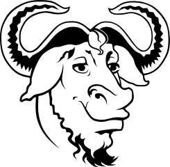
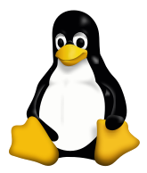
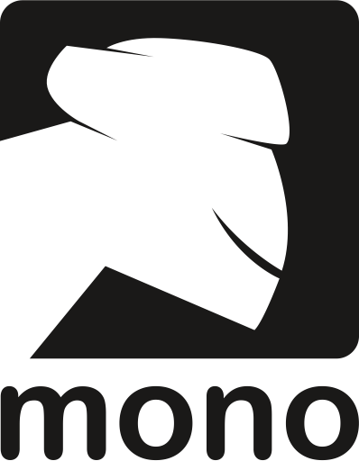
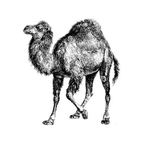
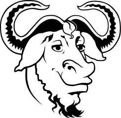
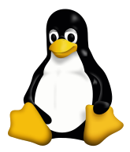
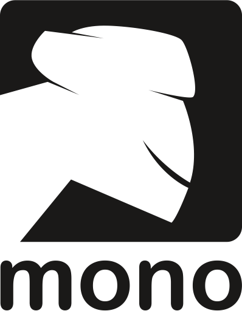
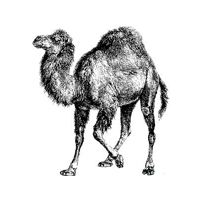

Ñu

Gimp

Tux

Mono

Perl

Mysql

Suse

(http://es.wikipedia.org/wiki/Geek)
que se podria traducir al castellano como friki.
Software Libre
Definiciones basicas
Software libre
la definicion de software libre estipula los criterios que se tienen que cumplirpara que un programa sea considerado libre.
De vez en cuando modificamos esta definicion para clasificarla o para resolver problemas sobre cuestiones delicadas.
Mas abajo en esta pagina, en la seccion Historial, se puede consultar la lista de modificaciones que afectan la definicion de software libre.
"Software libre"es el software que respeta la libertadde los usuarios y la comunidad. Engrandes lineas, significa que los usuarios tienen la libertad para ejecutar, copiar, distribuir, estudiar, modificar y mejorarel software. Es decir, el "software libre"es una cuestion de libertad, no de precio. Para entender el concepto, piense en "libre"como en"libre expresion" no como en barra libre
Promovemos estas libertades porque todos merecemos tenerlas. Con estas libertades, los usuarios(tanto individualmente como en forma colectiva) controlan el programa y lo que este hace. cuando los usuarios no controlan el programa decimos que dicho programa "no es libre", o que es "privativo". Un programa que no es libre controla a los usuarios y el programador controla el programa, con lo cual el programa resulta ser un instrumento de poder injusto
Un programa es software libre si los usuarios tienen las cuatro libertades esenciale:La libertad de ejecutar el programa como se desea, con cualquier proposito(libertad D)
La libertad de estudiar como funciona el programa y cambiarlo para que haga lo que usted quiera(libertad1). El acceso al codigo fuente es una condicion necesaria para ello
La libertad de redistribuir copias para ayudar a su projimo (libertad 2)La libertad de distribuir copias de sus versiones modificadas a terceros (libertad 3). Esto le permite ofrecer a toda la comunidad la oportunidad de beneficiarse de las modificaciones. El acceso al codigo fuente es una condicion necesaria para ello
La libertad para distribuir (libertades 2 y 3) significa que usted tiene la libertad para redistribuir copias con o sin modificaciones, ya sea gratuitamente o cobrando una tarifa por la distribucion, a cualquier en cualquier parte. Ser libre de hacer esto significa, entre otras cosas, que no tiene debe que pedir ni pagar ningun permiso para hacerlo
Mascotas del mundo del software libre
Ñu  |
Un Ñu es el animal representativo del proyecto GNU ya que GNU significa "Ñu" en ingles. El nombre GNU no se adapto porque a la persona que comenzo el proyecto (Richard Stallman) le gustase particularmente este animal sino porque GNU es un acronimo recursivo que quiere decir "GNU´s Not Unix." |
|---|---|
Gimp
|
Wilber es lamascota de GIMP (GNU Image Manipulacion Program) fue creada en 1997 por Thomas Knosmanen y Wilber es un...gimp. A menudo se confunde con un zorro o un raton, pero segun su creador, Wilber es simplemente un gimp. |
Tux  |
la idea Tux surgio del propio Linus Tarvalds; segun cuenta, de pequeño le mordio un piguino en Australia y desde entonces le parecio un animal simpatico. No hay un origen claro del nombre "Tux"; algunos dicen que proviene del ingles Tuxedo que significa esmoquin(siempre se ha dicho que los pinguinos van de esmoquin) y otros dicen que el nombre es una mezcla de Torvald con Unix. |
Mono  |
Mono es tanto el nombre como el animal representativo como de un proyecto que pretende ser una implementacion libre de la plataforma. Net. |
Perl  |
El camelloes la imagen del lenguaje Perl desde que apareciese por primera vez en el libro "Programming Perl", curiosamente, el camello de perl tiene derechos de autor (la editorial O´Reilly). |
Mysql
|
El delfin que es parte del logo de MySql se llama Sakila. Segun los creadores de MySql, este delfin representa los valores de la compañia y de la base de datos rapidez, precision, potencia y naturalidad. |
Suse
|
Geelco; asi se llama el simpatico camaleon que es la mascota de la compañia alemana Suse. El nombre fue elegido tras un concurso en el que participaron miles de personas y proviene del termino Geek (http://es.wikipedia.org/wiki/Geek) que se podria traducir al castellano como friki. |
Software libre la comunidad hacia el conocimiento Segun keyzado
Linux